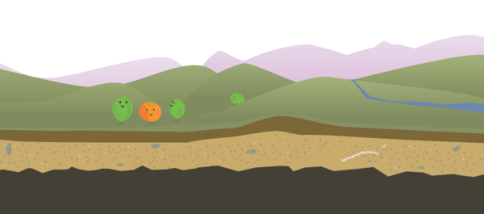

Surreal CMS acquires PageLime
Nearly a decade ago, I launched my first SaaS application. It was a new take on content management — a hosted CMS that reads/writes directly to a web server and uses class attributes to define content regions.
It was a great idea. Such a great idea that it inspired others to do the same. One of those apps was called PageLime.
Over the years, I've seen a number of similar services come and go, but PageLime came out swinging. These guys had tons of energy. Hell, they even managed to get featured by Mashable in 2010. It was the first time I was actually worried about my competition.
I never imagined that seven years later I would acquire them.

What happened? #
About three years ago, I noticed PageLime's support starting to slip. This was evidenced by users' feedback on Twitter and emails from new Surreal CMS users that were coming from PageLime.
Turns out, for whatever reason, PageLime's founders had moved on to other businesses and someone new had taken over support.
Since then, PageLime remained stagnant. Development stopped. The forum went offline. Then the blog was taken down. Sure, the website and service were still online, but they were just kinda there.
Down for a week #
On May 25, 2017, Twitter users began reporting that PageLime was down. Sure enough it was, and it stayed down until June 2 with no official response from support.
I can only speculate as to what happened. I don't know why it took so long to get the service back online. It was upsetting to users, for sure, but it also upset me as a SaaS owner who takes pride in offering top notch support.
The acquisition #
In early June, one of PageLime's co-founders contacted me about sunsetting the service. I outlined my vision for migrating users to Surreal CMS and we eventually came to an agreement for acquisition. (Details of the acquisition will remain private as part of the agreement.)
Over the last few weeks, I've worked diligently to create a tool that helps PageLime users migrate their account to Surreal CMS. My goal was to make the transition as seamless as possible for everyone.
Starting today, you can migrate your PageLime account to Surreal CMS in just a few seconds with the automated migration tool available on PageLime's website.
The shutdown #
PageLime will officially shutdown on August 31, 2017.
To be clear, I didn't acquire PageLime to shut it down — that was already going to happen. I acquired it to offer users a seamless transition from one service to another, and Surreal CMS is undoubtedly the most qualified alternative for them.
Of course, the migration is completely opt-in. Users can decide if they want to migrate their accounts to Surreal CMS or seek another service. Those who do migrate will receive two weeks free to make sure Surreal CMS is a good fit for their business.
I encourage PageLime users to join the Surreal CMS community forum. It's a great place to ask questions, meet fellow designers, and show the community what you've been working on.
If you have questions about your PageLime account or the acquisition, please visit pagelime.com. If you need to talk to a human, there's a link on the homepage.